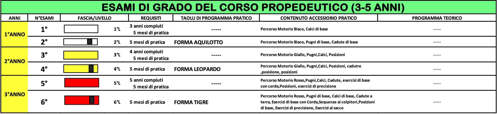
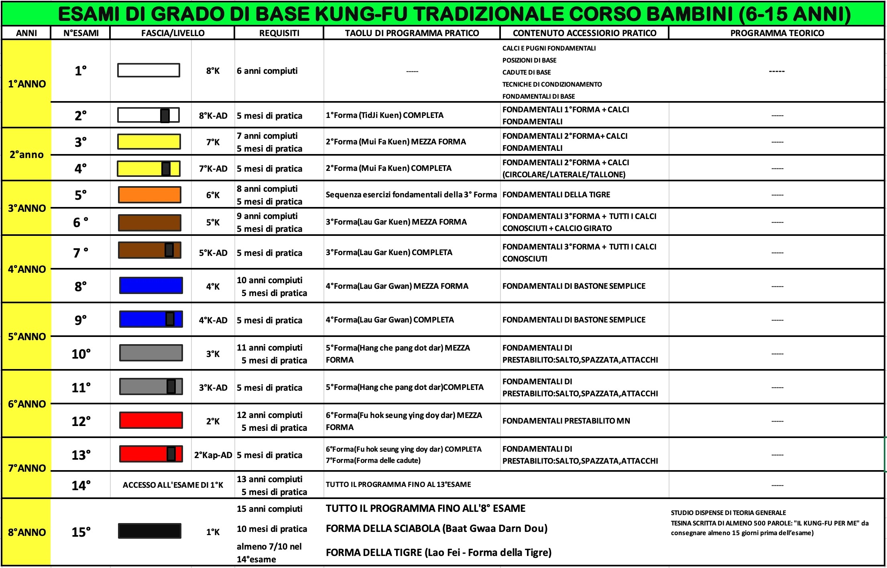
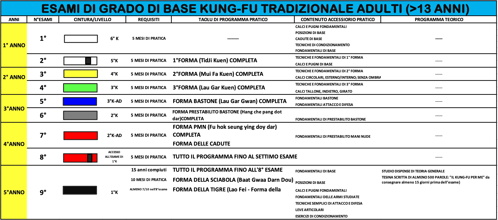
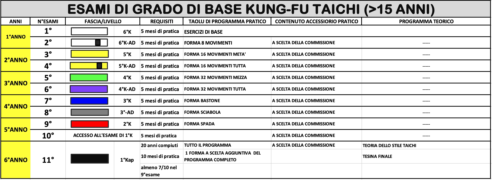
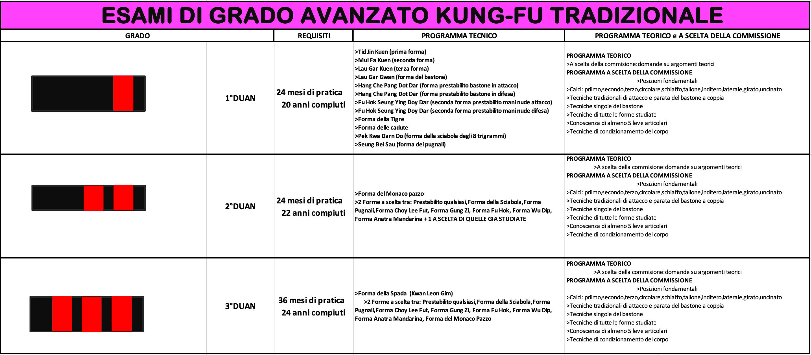
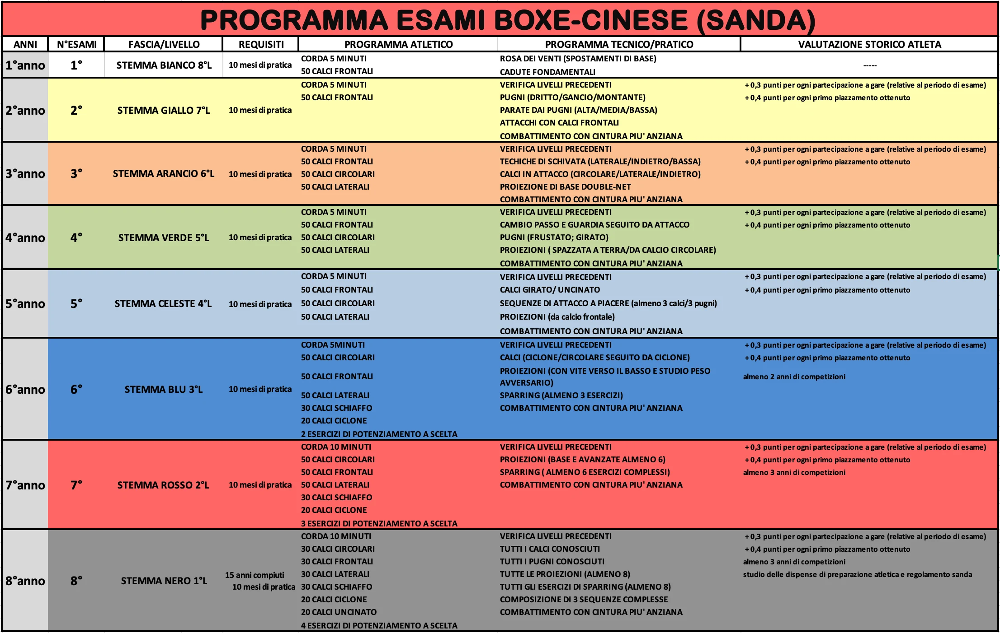
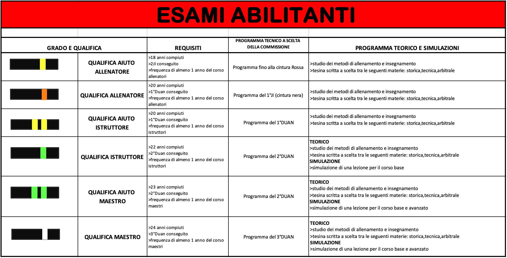
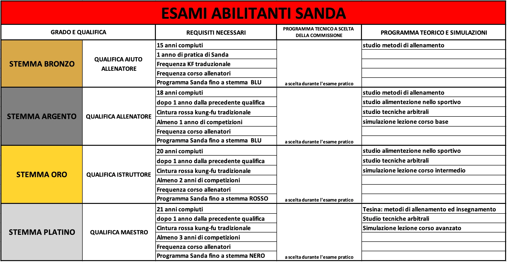

Di seguito elencate trovate le gradazioni con il percorso completo degli allievi che si iscrivono presso la nostra scuola. A seconda dell’età dell’allievo e della attività scelta vi è uno specifico percorso da seguire. Informazioni e modalità di svolgimento dell’esame di CINTURA NERA: l’esame di raggiungimento del livello di 1° JI è costituito da due parti, quella teorica e quella pratica.







